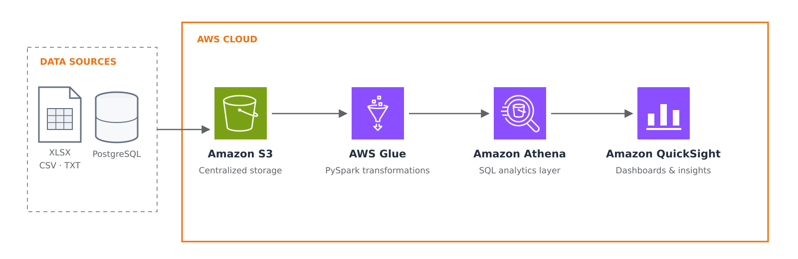

Overview
More than a dashboard migration.
This project involved migrating more than 30 dashboards from Tableau to Amazon QuickSight across Sales, Aftersales, and Marketing. The initiative aimed to reduce platform costs, centralize data within AWS, simplify maintenance, and improve the underlying data processes.
As part of the migration, fragmented logic was consolidated—for example, replacing five separate queries with a single optimized query.
The Challenge
Preserve trust while rebuilding the foundation.
The migration involved more than recreating dashboards in a different visualization tool. Each dashboard depended on its own data sources, calculations, filters, and complex business rules.
Some original sources were outdated or no longer available, which required identifying alternative datasets and validating them with different business teams. The main challenge was ensuring that the migrated dashboards reproduced the same KPIs and business logic while using a more centralized and maintainable architecture.
My Role
From requirements to delivery.
- Met with stakeholders to understand reporting needs and gather requirements for new metrics and improvements.
- Translated business requirements into data rules, queries, KPIs, and dashboard specifications.
- Cataloged more than 30 dashboards, including their KPIs, filters, charts, calculations, and business rules.
- Mapped Excel, CSV and TXT files, PostgreSQL tables, and existing AWS datasets.
- Worked with business teams to identify replacement sources when original data was unavailable.
- Ingested and centralized data in AWS.
- Developed and maintained data pipelines with AWS Glue and PySpark.
- Recreated and optimized analytical queries in Amazon Athena.
- Consolidated duplicated or fragmented query logic.
- Validated KPIs and compared results between Tableau and QuickSight.
- Imported curated datasets into QuickSight and rebuilt the dashboards.
- Guided colleagues during the final dashboard development phase by explaining the datasets, metrics, filters, and expected visualizations.
- Reviewed dashboards to ensure consistency with business requirements.
- Documented data sources, transformations, validation rules, and migration decisions.
Data & Architecture
A centralized analytics flow on AWS.
The original dashboards consumed data from multiple formats and systems, including Excel spreadsheets, CSV and TXT files, PostgreSQL tables, and existing AWS datasets.
The new architecture centralized these sources in Amazon S3. AWS Glue pipelines processed and transformed the data, while Amazon Athena provided the analytical layer used by Amazon QuickSight.

The pipelines were designed to refresh datasets automatically, reducing manual intervention and keeping dashboards up to date.
Solution
Rebuild, validate, and simplify.
The migration started with an inventory of the existing dashboards and their dependencies. For each dashboard, I documented its data sources, filters, calculated fields, KPIs, and business rules.
I met with stakeholders from Sales, Aftersales, and Marketing to understand their current reporting needs. These conversations helped identify new metrics and improvements that could be incorporated during the migration instead of simply reproducing the existing dashboards.
The required datasets were ingested into Amazon S3 and processed through AWS Glue pipelines. Transformations included data cleaning, standardization, joins, business-rule application, and the preparation of analytics-ready tables.
I recreated the analytical queries in Amazon Athena and consolidated duplicated logic whenever possible. Before connecting the datasets to QuickSight, I compared the new results with the original Tableau dashboards and investigated discrepancies.
During the final phase, colleagues supported the creation of charts in QuickSight. With the datasets and queries already prepared, I guided them through the required KPIs, filters, business rules, and expected visual structure, then reviewed the completed dashboards for accuracy and consistency.
The dashboards and their supporting data processes were documented to simplify future maintenance.
Technical Decisions
Choices made for scale and maintainability.
Amazon S3 as the centralized storage layer. This reduced dependency on scattered files and systems, creating a consistent location for raw and processed data.
AWS Glue and PySpark for data processing. They supported higher-volume datasets and transformations that required distributed processing, automation, and scalability.
Amazon Athena for analytical queries. Athena enabled SQL queries directly over data stored in S3 without maintaining a dedicated database server and simplified integration with QuickSight.
SQL for transformation and business logic. SQL was used to clean, join, aggregate, and standardize datasets while keeping analytical rules readable and easier to validate.
Consolidated queries. Similar or duplicated queries were combined to reduce repetition, simplify maintenance, and create a more consistent source of truth.
Data Quality & Reliability
Controls throughout the migration.
- Compared KPIs, totals, record counts, and filters between Tableau and QuickSight.
- Checked mandatory fields, null values, duplicates, data types, and unexpected values.
- Validated joins and aggregations to prevent duplicated or missing records.
- Confirmed business rules and discrepancies with the teams responsible for each subject area.
- Prevented failed or incomplete pipeline outputs from reaching downstream dashboards.
- Used AWS logs to track pipeline execution and support error investigation.
- Configured AWS notifications for pipeline failures.
- Documented validation criteria and known data-source limitations.
These checks helped prevent inconsistent data from reaching the final dashboards and made issues easier to identify and resolve.
Challenges & Trade-offs
Replication where it mattered, improvement where it helped.
One of the main challenges was dealing with original data sources that were outdated or no longer available. In these cases, I collaborated with other teams to identify equivalent datasets and confirm whether they could reproduce the required indicators.
Another challenge was balancing exact dashboard replication with backend improvement. Users needed consistent metrics and a familiar experience, but reproducing the existing implementation without revision would have preserved duplicated and difficult-to-maintain logic. The migration therefore maintained the business meaning of the dashboards while improving their underlying queries and data flows.
Results & Impact
A more maintainable reporting environment.
- Migrated more than 30 dashboards from Tableau to Amazon QuickSight.
- Added new metrics based on stakeholder requirements.
- Centralized data from multiple departments and source formats within AWS.
- Improved data availability through automated pipeline refreshes.
- Reduced duplicated logic by consolidating and optimizing queries.
- Enabled colleagues to contribute through technical guidance and clearly prepared datasets.
- Maintained consistency through reviews and standardized business rules.
- Simplified future maintenance through standardized pipelines and documentation.
- Supported lower BI platform costs while improving the underlying data architecture.
Tech Stack
Python · PySpark · SQL · Amazon S3 · AWS Glue · Amazon Athena · AWS Lambda · Amazon QuickSight · PostgreSQL · Tableau
What I Learned
A BI migration begins with understanding the data.
This project reinforced that a BI migration is not simply a matter of recreating charts in another platform. It requires a detailed understanding of data lineage, business rules, source reliability, and how each metric supports business decisions.
I strengthened my ability to translate stakeholder needs into technical requirements, validate results across platforms, and communicate data discrepancies with different business teams. Guiding colleagues through dashboard development also strengthened my ability to explain technical and business rules while maintaining consistency across deliverables.
In a future iteration, I would introduce automated reconciliation tests and standardized dashboard-building guidelines earlier in the process. This would make validation more efficient and help multiple contributors work consistently from the beginning.